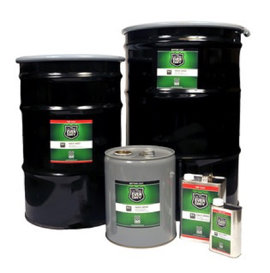
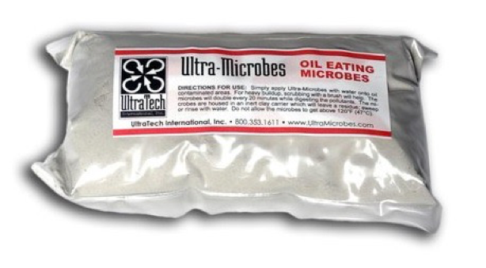

Absorbente de Hidrocarburos, Aceites Animales y Vegetales. Remediación y absorbentes.
Aplicaciones: Permite pasar grandes volúmenes de agua a través de su material mientras absorbe hidrocarburos líquidos, incluyendo petróleo, aceites animales y vegetales. Perfecto para el uso en separadores aceite/agua, sistemas de filtración de aguas pluviales, aguas residuales y aplicaciones de Purificación de agua.
Utilizado como un medio de filtración, el agua pasa libremente mientras absorbe los hidrocarburos al contacto. Ultra X-Tex es extremadamente eficiente dado la enorme superficie de área lipofílica de sus fibras. Ultra X-Tex trabaja muy bien como matriz de soporte fibrosa para otros materiales acondicionadores de agua tales como zeolitas Selectivas, carbones activados, limaduras de hierro cero-valientes, etc.
Ultra X-Tex es muy rentable en comparación con otros medios de filtración, absorbiendo una media de 20 veces su peso en hidrocarburos. Un aproximado del 85-90% de los aceites absorbidos puede ser extraído de Ultra X-Tex y ser reutilizado. En el banco de pruebas, Ultra X-Tex ha demostrado resultados asombrosos en la filtración de aceites emulsificador e hidrocarburos en corrientes de agua.
Tratamiento Supe hidrofóbico y Oleo fóbico para Superficies. Presentaciones de 1/4 Galón, 1 Galón, 5 Galones, 30 Galones, 50 Galones.
Aplicaciones: Ultra-Ever Dry es una nanotecnología de recubrimiento supe hidrofóbico (agua) y oleo fóbico (aceite) que repele la mayoría de líquidos basados en agua o aceite.
El recubrimiento superhidrofóbico mantiene los objetos secos. El agua y otros líquidos son fácilmente repelidos.
Se utiliza una tecnología omnifóbica para recubrir objetos y estructuras y crear una química de superficie y texturas con patrones geométricos que tiene “picos” o “puntos altos”. Estos picos repelen agua, algunos aceites, concreto húmedo y otros líquidos como ningún otro producto en el mercado.
Las propiedades superhidrofóbicas de Ultra-Ever Dry mantienen los materiales recubiertos completamente secos, eliminando la formación de hielo, en el caso de heladas, haciendo el proceso de eliminación de hielo muchísimo más fácil.
Utilice el tratamiento superhidrofobico de Ultra-Ever Dry para extender la vida de motores eléctricos previniendo la acumulación de agua en las entradas de aire, corrosión en tornillos y tuercas, recubrir herramientas, y virtualmente cualquier elemento que se necesite mantener seco, libre de corrosión, sin hielo, descontaminado o limpio. Ahorre dinero, mejore la seguridad y cree un entorno de trabajo más limpio.
Degradación Microbiana de Aceites, Grasas e Hidrocarburos 6 oz. Shaker, 28 oz. Shaker, 6 pack de 4 oz. WSP, 25 lbs Bags.
Aplicaciones:Los Ultra-Microbes son una mezcla de tres tipos distintos de bacterias provenientes de los alrededores de zonas volcánicas que han sido cultivados con amoníaco, agua de mar y petróleo como fuente de alimentación.
El resultado es un producto 100% natural, de actuación rápida que degradan aceites, grasas e hidrocarburos, así como materia orgánica. Este cultivo de microbios no ha sido modificado genéticamente y forma parte de la lista de componentes del Plan de Contingencia para zonas costeras en EUA.
Elimina cualquier rastro de grasa, aceite e hidrocarburos y sus malos olores, es una concentración de 5 billones de bacterias por gramo. Uso apto para restaurantes, plantas de tratamiento industrial y municipal, industria alimentaria, remediación de derrames de hidrocarburos, etc.
Producto No Tóxico. Evita estancamientos de drenajes debido a acumulaciones de grasas. Regenera suelos contaminados saturados de aceites, grasas e hidrocarburos. Los microbios de Ultra-Microbes digieren las moléculas de hidrocarburos, grasas y aceites transformándolas en subproductos no nocivos del carbono, dióxido de carbono y lípidos (un material soluble graso que es fuente de alimentación de plantas y peces).